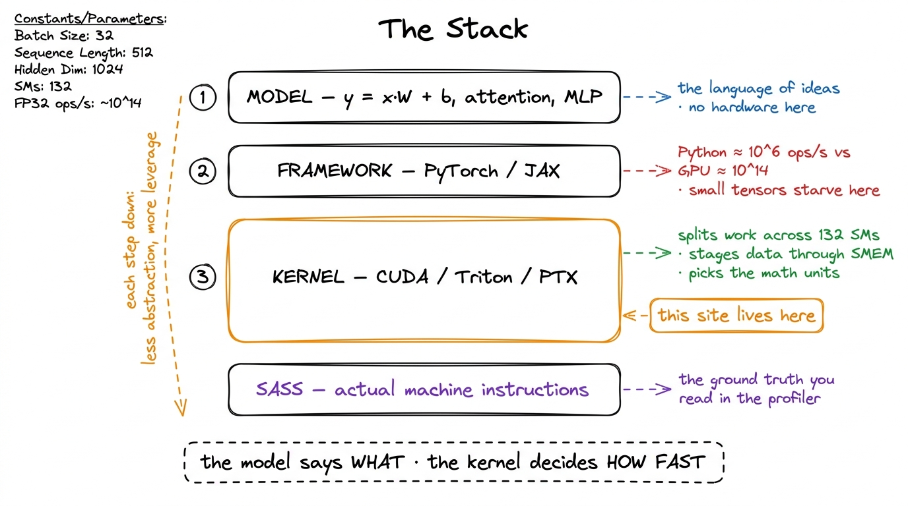
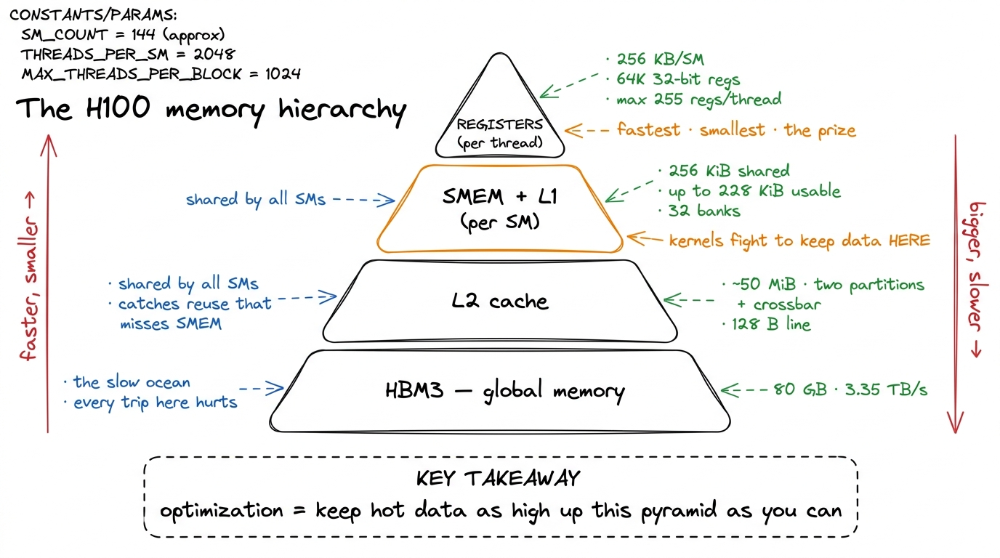
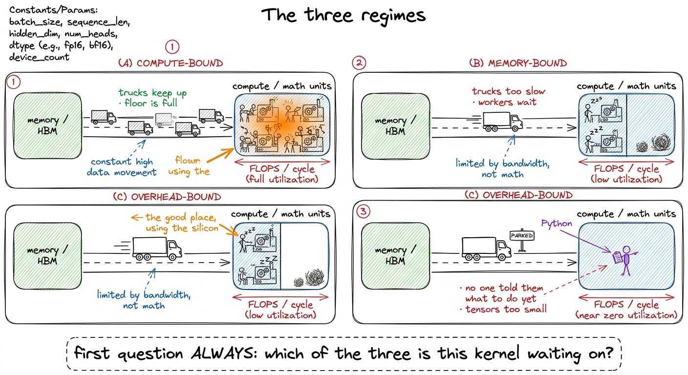

Why kernels run the world
Every frontier model — the one that just wrote your code, the one drafting your emails, the one that beat a grandmaster — is, at the bottom, a few dozen matrix multiplies running in a loop. Strip away the trillion parameters and the clever training recipe and what remains is arithmetic being ground through silicon as fast as physics allows. The speed of that grinding is not decided by the model, or by PyTorch, or by the researcher who designed the architecture. It is decided by a few thousand lines of hand-tuned GPU code that almost nobody can write. Those lines are kernels, and this site is about how to write them.
That is the whole pitch, and it sounds like hyperbole until you look at where the time actually goes. When a 70-billion-parameter model generates a token, essentially all of the wall-clock time is spent inside a handful of kernels: a GEMM for every linear layer, an attention kernel, a normalization, an activation. The model is a description of which kernels to call and in what order. The kernels are where the machine actually earns its electricity bill. Get them right and a training run finishes in a month instead of three; get them wrong and you are renting an H100 — a chip that can do about 989 TFLOP/s of BF16 — to run it at 3% of its rated speed. People do this constantly. The default is slow.
The stack, and the layer nobody sees
It helps to draw the whole thing as a stack, because the interesting fact is not any single layer but the enormous drop in altitude as you descend it.
At the top is the model — a graph of tensor operations a researcher wrote in a notebook. y = x @ W + b, an attention block, a residual add. This is the language of ideas: attention, MLPs, mixtures of experts. Nothing here knows what a GPU is.
Below that is the framework — PyTorch, JAX — which turns that graph into a sequence of operator calls and hands each one to the GPU. This layer is where "a matmul" becomes "launch a kernel that computes a matmul." It is also where a surprising amount of time can quietly vanish: Python executes on the order of a few million operations per second, while an H100 does hundreds of trillions of floating-point operations per second.1 Horace He's Making Deep Learning Go Brrrr puts it starkly: in the time Python finishes one addition, an A100 could have done roughly 9.75 million. The only reason PyTorch is usable at all is that it launches kernels asynchronously and races ahead to queue the next one while the GPU chews on the last. If your tensors are small, the framework itself becomes the bottleneck and the GPU sits idle waiting for Python to feed it.
Below that is the kernel — the CUDA C++ (or Triton, or raw PTX) that runs on the GPU and actually does the arithmetic. This is the layer this site lives at. A kernel decides how the problem is split across the chip's Streaming Multiprocessors (SMs) — an H100 has about 132 of them across 8 GPCs — how data is staged through the memory hierarchy, and which math units light up. Two kernels computing the identical mathematical result can differ by 50× in speed depending entirely on these choices.
And below the kernel is SASS — the actual machine instructions the GPU executes, the assembly your CUDA gets compiled down to. You do not usually write SASS, but you read it, because it is the ground truth. When a profiler tells you a kernel is slow and your intuition disagrees, the SASS listing settles the argument. Every worklog on this site eventually drops down to it.

figure rendering · The four-layer stack. Ideas at the top, machine instructions at the boThe thing to notice is that leverage increases as you go down. A better model architecture is a research bet that may or may not pan out. A better kernel is a guaranteed win that applies to every model that ever calls it. FlashAttention did not change the mathematics of attention by one bit — it changed the kernel, and in doing so it changed what context lengths the entire field considered feasible.2 This is also why genuinely better architectures struggle to win: a new attention variant with better asymptotic complexity still has to beat FlashAttention on wall-clock time, and FlashAttention has years of hand-tuning behind it. The kernel, not the algorithm, is often the thing being competed against.
Why this layer is scarce
If kernels are this important, you would expect them to be a solved, commoditized skill by now. They are the opposite. The layer is scarce for reasons that are structural, not accidental.
The first reason is that the knowledge does not live where knowledge usually lives. CUDA makes up roughly 0.073% of a large public code corpus like The Stack — a rounding error.3 Figure from Simon Guo's survey of automated GPU-kernel generation. The practical consequence is that today's frontier models have seen very little kernel code during training, so they are far weaker at writing kernels than at writing web apps — a rare domain where a human with the right training still comfortably beats the machine. Every general-purpose model you use has read millions of React components and almost no well-tuned GEMM kernels. The result is a domain where an ordinarily strong LLM is weak, which means the humans who can do it are unusually valuable and hard to replace.
The second reason is that the ground keeps moving. Every hardware generation rewrites the rulebook. Hopper (sm_90a) introduced thread-block clusters, distributed shared memory, the Tensor Memory Accelerator (TMA) for bulk async copies, and wgmma warpgroup matrix instructions — none of which existed on the previous generation. Blackwell then did it again with tcgen05, Tensor Memory (TMEM), CTA pairs, and NVFP4. A kernel hand-tuned to perfection for one architecture is a decent-but-unremarkable kernel on the next, and porting across vendors is worse still.4 Guo's survey recounts a team spending a full quarter fighting HIP kernels to get competitive performance on AMD hardware whose raw specs were superior — the specs were never the problem; the kernels were. The skill is not "know the current tricks." It is "know how to find the tricks a new chip rewards," and that transfers slowly and expensively.
The third reason is the one that makes this a growing field rather than a shrinking one: compute is growing faster than bandwidth. Each GPU generation adds FLOP/s faster than it adds bytes-per-second from memory — an H100 pairs its ~989 BF16 TFLOP/s against 3.35 TB/s of HBM3, and that ratio only gets more lopsided over time. The consequence is that more and more workloads become memory-bound by default, and the tricks that move fewer bytes — fusion, tiling, precision, staging through the on-chip memory that each SM shares as up to 228 KiB of scratchpad — keep getting more valuable, not less. The kernel engineer's job is increasingly a bytes-movement job wearing a compute-shaped hat.
The whole reason those tricks pay off is the shape of the memory hierarchy the kernel has to feed data through — a pyramid that gets tiny and blindingly fast as you climb it:

figure rendering · The memory pyramid. Every kernel optimization is, ultimately, a fightWhat "getting it right" actually looks like
Here is the part that makes this teachable, and it is the reason we picked GEMM as the spine of the course. Kernel work is not mystical. It is measurable. Correctness is a numerical tolerance check; performance is wall-clock time against a reference. There is no arguing with either.
Take the single matrix multiply that every linear layer bottoms out in. The naive version is the obvious one — one thread per output element, three lines of loops:
__global__ void sgemm_naive(int N, const float* A, const float* B, float* C) {
const uint m = blockIdx.y * blockDim.y + threadIdx.y;
const uint n = blockIdx.x * blockDim.x + threadIdx.x;
if (m < N && n < N) {
float acc = 0.0f;
for (int k = 0; k < N; ++k)
acc += A[m * N + k] * B[k * N + n];
C[m * N + n] = acc;
}
}It is correct. It runs. And it reaches about 1.3% of cuBLAS — NVIDIA's hand-tuned library that has been optimized for fifteen years.5 cuBLAS is the yardstick, not the goal, for a learner. NVIDIA employs teams to tune it and ships architecture-specific assembly. Reaching 90-something percent of it with kernels you derived from measurements is the realistic and impressive target. The remaining factor of seventy is not one clever trick; it is a ladder of about ten of them, each justified by a profiler reading rather than a hunch. On this site we climb that ladder one measured rung at a time:

figure rendering · The GEMM ladder. Ten kernels, a 70× climb, each step chosen by the botEvery rung on that staircase is a self-contained worklog: a hypothesis about the current bottleneck, the smallest kernel that tests it, a profile or SASS listing as evidence, and a bold number saying exactly how much we won. By the top rung we are at 93.7% of cuBLAS — using a warptiling scheme built entirely from measurements, not memorized folklore. That number is the whole promise of the site in miniature: you can get within a hair of code NVIDIA has tuned for fifteen years, and you can get there by understanding the machine, one measurement at a time.
What the rest of this site delivers
The course is built around two intertwined tracks, and you can read them in either order.
The concept track builds the mental models you need to interpret what you see. It starts with the three regimes — the single most important diagnostic, the question "what is this kernel waiting on?" — then the roofline model, the H100 memory hierarchy from HBM through L2 down to the shared memory and L1 that lives on each SM, warps and occupancy, the tensor cores, and the Hopper-and-Blackwell features (wgmma, TMA, tcgen05) that define the modern frontier.
The worklog track is the GEMM ladder above, plus attention kernels and the async-pipeline tricks that hide memory latency behind compute. These are worklogs in the honest sense: we show the kernels that were slow, the profiles that explained why, and the reasoning that picked the next move. Nothing is presented as obvious in hindsight, because none of it was.
The reason to actually learn this — beyond the fact that it is the most satisfying kind of engineering there is, where the machine tells you plainly when you are right — is that it is scarce, high-leverage, and increasingly hireable. Every AI company on earth is bottlenecked on exactly this skill; the wins are measurable and un-fakeable; and the layer is too specialized for the current generation of models to have automated away. Even the automated-kernel-generation efforts Guo surveys frame their goal as amplifying scarce kernel engineers, not replacing them — the strongest current systems get there by sampling many candidate kernels and looping in profiler feedback, which is exactly the loop a human learns to run in their head. Learning it by hand is not obsolete; it is the thing being automated, which means understanding it deeply is the most durable version of the skill.
So we begin where every good kernel engineer begins: not by writing code, but by asking a single question about a piece of code that is already running. What is it waiting on? That is the three regimes, and it is the next thing to read.